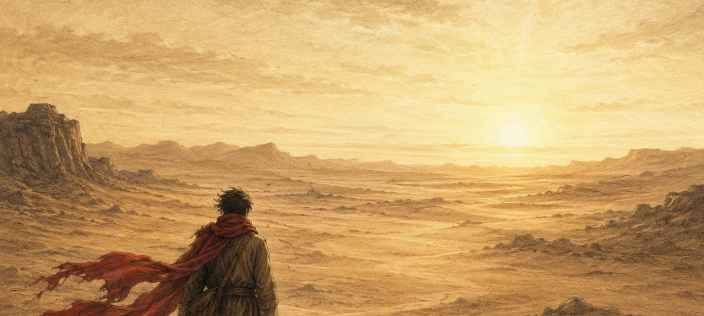

Uma última experiência antes de continuar
Imagine que amanhã você precise partir.
Não uma viagem.
Não uma mudança planejada.
Partir sem saber quando, ou se, poderá voltar.
Você terá alguns segundos para fazer algumas escolhas. Não existem respostas certas.
Você só pode levar uma coisa.
Sua casa ficará. Seu dinheiro talvez não tenha valor. Você não sabe para onde está indo.
O que você levaria?
Você conseguiu escolher.
Ashir não pôde escolher.
Ele tinha apenas dez anos quando o mundo que conhecia desapareceu.
Não houve mala.
Não houve planejamento.
Não houve despedida.
Houve apenas uma ordem:
“Vá.”
Ele correu carregando sua irmã.
Quando finalmente parou, percebeu que ela já não estava viva.
Ele havia carregado o corpo dela durante a fuga sem perceber.
No dia seguinte, cavou uma cova com as próprias mãos.
Mais tarde voltou para sua aldeia.
E encontrou seus pais mortos.
E foi então que ele começou a caminhar.
Anos depois, alguém colocou uma bússola na mão dele.
Ashir não sabia exatamente para onde ela o levaria.
Ela não apontava para casa.
Mas apontava para algum lugar.
Ele atravessou países procurando uma coisa muito simples.
Um lugar onde pudesse viver.
No caminho, perdeu quase tudo.
Foi explorado.
Usado.
Tratado como invisível.
Chamado por nomes que não eram o dele.
E continuou.
Quando você não tem mais para onde voltar, o que acredita que faria alguém continuar?
Talvez.
Talvez tudo isso junto.
Ashir continuou muitas vezes sem saber exatamente por quê.
Em determinado momento, ele nem sabia para onde estava indo.
Só sabia que seguir em frente significava:
“Não aqui.”
Ashir perdeu quase tudo.
Casa
Família
Infância
Documentos
Nome
E, em vários momentos, quase perdeu a si mesmo.
Mas continuou.
Eu conheci Ashir em uma prisão.

Eu também estava cumprindo uma sentença.
Ele já estava preso havia cinco anos.
Ashir não me contou sua história de uma vez. Foi contando aos poucos.
Até que comecei a compreender o caminho que aquele homem havia percorrido para chegar àquela cela.
Eu saí daquela prisão.
A história dele não podia ficar lá.